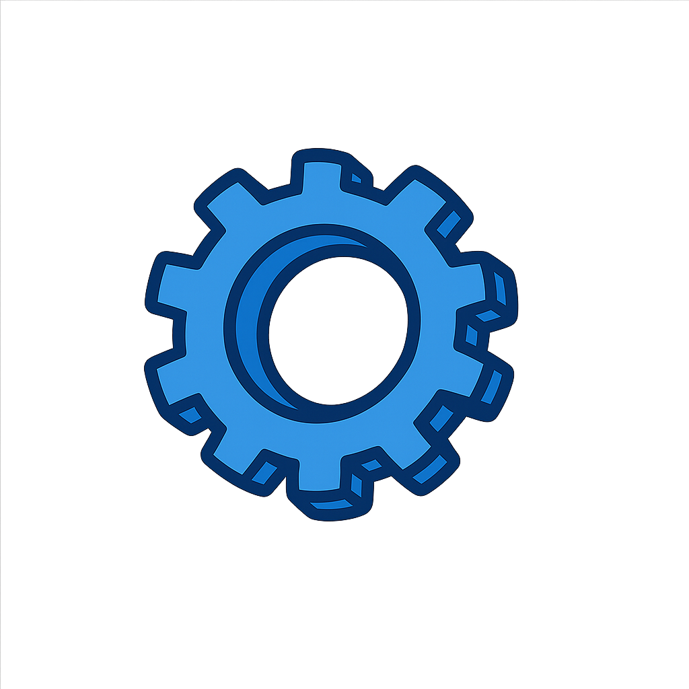

Spezialist für Automatisierung und Projektmanagement
Jede neue Herausforderung sehe ich als Chance zur Weiterentwicklung. Mit Achtsamkeit, Kreativität und schnellem Handeln finde ich Wege, diese zu meistern. Herausforderungen sind für mich keine Hindernisse, sondern Trittsteine, um zu wachsen und mein Potenzial zu entfalten.
Über Mich
Ingenieur Mauricio Mora, MSc., mit fundierter Erfahrung im Management von Automatisierungsprojekten, Softwareentwicklung und EMSR-Techniken. Mein Ansatz konzentriert sich auf die Anwendung von Kreativität, schnellem Handeln und akribischer Aufmerksamkeit, um Herausforderungen zu meistern, Wachstum zu fördern und mein volles Potenzial zu entfalten.
Ich suche aktiv nach neuen Möglichkeiten, um mich beruflich weiterzuentwickeln und Mehrwert für Unternehmen zu schaffen.
Fachkenntnisse
Software und Technologien
MS Office, Access und Project(Level: 5/5)
SPS - Tia Portal(Level: 5/5)
MS Visual Basic(Level: 5/5)
C, C++(Level: 4/5)
HTML, Java, PHP(Level: 4/5)
Oracle - MySQL(Level: 3/5)
SAP(Level: 3/5)
Solid Edge(Level: 3/5)
Sprachen
Spanisch(Muttersprache - C2)
Deutsch(C1)
Englisch(B2)
Französisch(A1)
Zertifikate und Sonstiges
Führerscheine: A und B
Berufserfahrung

EMSR-Techniker
05.2024 - 11.2024
VOGELBUSCH Biocommodities GmbH, (Vollzeit), Viena, Austria
Erstellung von Standarddokumentationen für elektrische und instrumentelle Systeme (Mess-, E/A-, Motoren-, Verbraucherlisten) und Überprüfung von P&I-Diagrammen zur Sicherstellung der Konformität mit Automatisierungsanforderungen.
Zeigte hohe Proaktivität und erledigte Aufgaben zu voller Zufriedenheit.
Projektmanagement in Automatisierung und Softwareentwicklung
08.2021 - 03.2024
PRIMETALS TECHNOLOGIES AUSTRIA GmbH, (Vollzeit), Linz, Austria
Schlüsselrolle in der Architektur und Softwareentwicklung für Automatisierungs- und Elektrotechnikprojekte. Managte internationale technische Projekte, einschließlich Kundenkommunikation, Lieferantenverhandlungen, Planung elektrischer Anlagen (MCC, PLCs, Transformatoren, Motoren, Sensoren, Umrichter) und Erstellung detaillierter technischer Dokumentation (Spezifikationen, Standards, Layouts, Gerätelisten und Funktionsbeschreibungen).
Führte Inspektionen und Abnahmen in Fabriken durch. Ausgezeichnet durch Präzision, Zuverlässigkeit, Engagement und tiefes technisches Wissen, fand stets optimale Lösungen und trug maßgeblich zum Projekterfolg bei.
Automatisierungstechniken und Projektleiter
06.2019 - 07.2021
SPRINGER MASCHINENFABRIK GmbH, (Vollzeit), Linz, Austria
SPS-Softwareentwickler in der Sägewerksautomatisierung. Verantwortlich für die Teamerstellung von Programmen, die Inbetriebnahme beim Endkunden und den ordnungsgemäßen Projektabschluss.
Erwies sich als gewissenhafte, loyale und vielseitige Person in seinen Funktionen.
Promotionstätigkeiten
01.2015 - 05.2019
PLASMAPUNKT DONAUZENTRUM, (Freier Dienstvertrag), Viena, Austria
Kälteanlagentechniker (Praktikum)
02.2019 - 02.2019
Johnson Controls, (Praktikum), Viena, Austria
Hilfsmitarbeiter mit Logistik-Tätigkeiten
04.2016 - 01.2017
WIENER GEWÄSSER (MA 45), (Vollzeit), Viena, Austria
Sales Assistent-Manager
04.2015 - 11.2015
SUBWAY (DON sub GmbH), (Saisonarbeit), Viena, Austria
Verantwortlich für Lager, Verkauf und Kasse (viel Kundenkontakt).
Meine Hauptaufgabe war es, die ordnungsgemäße Funktion des gesamten Fuhrparks zu gewährleisten, der den Transport zwischen den verschiedenen Einrichtungen des Unternehmens sicherstellte.
Dies umfasste Aktivitäten innerhalb der Stadt sowie für Untersuchungen oder Notfälle auf nationaler Ebene. Während dieser Zeit gelang es mir, Programme in Visual Basic zu entwickeln, um die Ausgaben für Fahrzeuge, sowohl für Mechanik als auch für Kraftstoff, zu kontrollieren, was zu einer Einsparung von 20% führte.
Darüber hinaus war ich für die Entwicklung und Überwachung des Fahrzeugkaufprozesses verantwortlich. Ich erwarb erfolgreich vier Lastwagen, die den Anforderungen für unsere Dienstleistungen entsprachen, und etablierte die Vertragsmodelle für zukünftige Anschaffungen von für das Unternehmen geeigneten Fahrzeugen.
Projektmanager
03.2011 - 12.2011
FACTS S.A.S, Colombia
Meine Hauptaufgabe bestand darin, Dashboards mit Xcelsius zu entwickeln. In dieser Zeit gelang es mir, ein neues mehrschichtiges Dashboard-System zu entwickeln, das die Datenvisualisierung optimierte.
Ich war auch ein Pionier bei der Erstellung von Dashboards, die Informationen direkt aus Textdateien (.txt) laden konnten, was ihnen die Flexibilität gab, mit jeder Datenbank zu arbeiten. Zur Ergänzung erstellte ich auch Berichte in Oracle-Datenbanken und extrahierte die Informationen im .txt-Format zur späteren Verknüpfung mit den Dashboards.
Projektmanager
05.2010 - 05.2011
QP Consultores, Colombia
Meine Verantwortung war die Entwicklung von Dashboards und Berichten für die Business Intelligence-Infrastruktur, die Finanz-, Logistik- und Bestandsberichte und andere zeigten.
Während meiner Zeit dort gelang es mir, die Lieferzeiten erheblich zu verbessern, die vereinbarten Termine einzuhalten und somit die Erfüllungsquote des Unternehmens zu erhöhen. Außerdem entwickelte ich neue Dashboard- und Berichtssysteme, die die Informationsabfrage wesentlich dynamischer gestalteten.
Ein wichtiger Erfolg war, dass ich durch die Verkettung von Informationen innerhalb der Oracle-Datenbanken die Verarbeitungszeiten der Dashboards erheblich reduzieren konnte.
IT & Logistik Manager
2008 - 2010
BRITISH AMERICAN TOBACCO (BAT), Bogotá, Colombia
Manager der Berichts-Plattform mit SAP Business Intelligence und Xcelsius Anwendungen.
Akademische Ausbildung
Produktions- und Technologiemanagement MSc
09.2020 - 11.2023
Zukunftsakademie Mostviertel und FH St. Pölten, Austria
Das Masterprogramm "Produktions- und Technologiemanagement (MSc)" befähigt Absolventen, Produktionsprozesse effizient zu gestalten und technologische Innovationen in der Industrie zu implementieren. Ein zentrales Thema des Studiums ist das Projektmanagement, das es den Studierenden ermöglicht, komplexe Projekte im Produktions- und Technologiesektor effektiv zu planen und zu steuern.
Die Studierenden erlernen Techniken zur Projektstrukturierung, Ressourcen- und Zeitplanung sowie zum Risikomanagement, um dynamische und technisch anspruchsvolle Projekte erfolgreich umzusetzen.
Darüber hinaus legt das Programm einen starken Fokus auf Lean Manufacturing-Methoden, die darauf abzielen, die Effizienz und Qualität in der Produktion zu maximieren. Konzepte wie das Toyota-Produktionssystem, Kaizen und Six Sigma sind wichtige Bestandteile des Lehrplans. Diese Methoden dienen dazu, Verschwendung zu minimieren und die Produktivität zu steigern, indem kontinuierliche Verbesserungen der Produktionsprozesse gefördert werden. Die Studierenden lernen, Wertschöpfungsketten systematisch zu analysieren und nachhaltige Verbesserungsstrategien zu entwickeln, die hohe Qualität und niedrige Kosten gewährleisten.
Das Programm bereitet Absolventen auf Führungspositionen in Produktions- und Technologieunternehmen vor. Durch das Zusammenspiel von Projektmanagement und Lean Manufacturing entwickeln sie ein tiefes Verständnis für moderne Managementansätze, die in einer digitalisierten und globalisierten Industrie gefragt sind. Absolventen sind bestens qualifiziert, technologische Fortschritte gezielt in Produktionsprozesse zu integrieren und Wettbewerbsvorteile zu schaffen.
Der Master "Produktions- und Technologiemanagement" bietet somit eine praxisorientierte und zukunftsweisende Ausbildung, die sich an den Anforderungen einer sich ständig weiterentwickelnden Industrie orientiert und darauf abzielt, die Herausforderungen der modernen Produktion mit innovativen und nachhaltigen Lösungen zu begegnen.
Masterarbeit:
Meine Masterarbeit, "Empirische Bewertung der Vorteile von MUL (Maßeinheitenumwandlung und Lineal) bei der Umrechnung von Maßeinheiten: Ein Vergleich mit der traditionellen Methode", evaluierte empirisch die Vorteile einer von mir entwickelten alternativen Methode (MUL) desarrollado por mí zur Umrechnung von Maßeinheiten im Vergleich zum traditionellen Ansatz.
Durch eine detaillierte Analyse beleuchtete die Forschung die Wirksamkeit dieser neuen Methode im Lernen und in der praktischen Anwendung und bot eine wertvolle Perspektive für die Didaktik der Natur- und Ingenieurwissenschaften.
Kälteanlagentechniker - Berufsausbildung
11.2017 - 04.2019
Berufsförderungsinstitut (BFI), Viena, Austria
Während dieser intensiven Ausbildung erwarb ich eine solide Grundlage in der Montage, Inbetriebnahme und Wartung von Kühl- und Klimaanlagen, wobei ich grundlegende Kenntnisse der industriellen Elektrotechnik integrierte.
Ich wurde in der elektrischen Installation von Kühlanlagen und Wärmepumpen geschult, einschließlich der Rohrverlegung, Anschlüsse, Dichtigkeitsprüfung und Leckagekontrolle, unter Einhaltung der Sicherheits- und Umweltschutzvorschriften. Darüber hinaus entwickelte ich Kompetenzen im Design und der Diagnose von Stromkreisen und Steuerungssystemen (SPS), einschließlich spezifischer Mess- und Regelungstechniken des Kältekreislaufs.
Ich ergänzte mein Profil mit praktischen Fähigkeiten in der Metallverarbeitung – wie Drehen, Fräsen, Schweißen und Montage von Schaltschränken – und der Anwendung von Pneumatik- oder Elektropneumatiksystemen. Die Ausbildung bereitete mich erfolgreich auf die Abschlussprüfung ("Lehrabschlussprüfung") im Modul Elektrotechnik und im Fachgebiet Kältetechnik vor und positionierte mich als qualifizierten Techniker für den Betrieb, die Wartung und die Optimierung von Kälteanlagen und Klimaanlagen in industriellen und kommerziellen Umgebungen.
Elektrotechniker Berufsausbildung (Anlagen- und Betriebstechnik)
11.2017 - 04.2019
Berufsförderungsinstitut (BFI), Viena, Austria
Während dieser intensiven Ausbildung erwarb ich eine solide Grundlage in der Elektrotechnik für industrielle Umgebungen, wobei der Schwerpunkt auf der Installation, Wartung und Reparatur elektrischer und elektromechanischer Systeme lag.
Ich lernte, mit komplexen Anlagen zu arbeiten, die elektrische, pneumatische und hydraulische Komponenten integrieren, unter Anwendung technischer Kriterien und gültiger Sicherheitsvorschriften. Ich wurde in der Interpretation von Stromlaufplänen und technischen Schemata sowie in der Messung, Analyse und Diagnose von Gleich-, Wechsel- und Drehstromkreisen geschult, wobei ich professionelle Instrumente verwendete und die VDE-Standards beachtete.
Parallel dazu entwickelte ich Fähigkeiten in der industriellen Automatisierung durch den Umgang mit Steuerungssystemen und der grundlegenden Programmierung von SPS, wobei ich Kenntnisse in Messung, Regelung und Fehlererkennung anwendete. Die Ausbildung umfasste auch Grundlagen der mechanischen Fertigung (Drehen, Fräsen, CNC) und grundlegende Schweißtechniken (Elektrode, Autogen und MIG/MAG), was es mir ermöglichte, mein technisches Profil mit praktischen Werkstattfähigkeiten zu ergänzen.
Ebenso befasste ich mich mit Themen der Nachhaltigkeit und erneuerbaren Energien in der Elektrotechnik und integrierte effiziente und umweltfreundliche Lösungen. Dieser Kurs bereitete mich darauf vor, professionell als Elektrotechniker in Industrieanlagen tätig zu sein, mit einer umfassenden Vision der Funktion von Anlagen und Betriebssystemen und mit Kompetenzen, sowohl technische als auch operative Aufgaben innerhalb der Wartung und Optimierung industrieller Prozesse zu übernehmen.
Masterstudium Maschinenbau
2003 - 2012
Universidad de los Andes, Bogotá, Colombia
Spezialisierung: Logistik und Produktionskontrolle.
Während des Studiums in Wirtschaftsingenieurwesen erwarb ich eine umfassende Ausbildung zur Prozessoptimierung in verschiedenen Industrie- und Wirtschaftszweigen.
Ich entwickelte Kompetenzen in Schlüsselbereichen wie Produktion, Logistik, Qualitätsmanagement und Supply Chain Management, wobei ich mich auf die Verbesserung der Betriebseffizienz und Kostensenkung konzentrierte.
Darüber hinaus erwarb ich anwendbare Kenntnisse in Forschung und Entwicklung innovativer Technologien, insbesondere in Automatisierung, Robotik und künstlicher Intelligenz. Ich bildete mich auch in Unternehmensberatung weiter und unterstützte Organisationen bei der Prozessverbesserung, der strategischen Planung und dem Projektmanagement. Meine Ausbildung umfasste die Führung von Teams, die Planung von Produktionsprozessen, die Implementierung von ERP-Systemen und die Entwicklung nachhaltiger Lösungen für die Industrie. Dieser Studiengang bereitete mich auf verantwortungsvolle und führende Rollen in einem globalisierten Wirtschaftsumfeld vor.
Matura (Abitur)
2003
Liceo Los Alpes, Cali, Colombia
Zusätzliche Ausbildung
Einführungskurs in KI
2025
BIG school
Ich habe den Online-Einführungskurs in Künstliche Intelligenz absolviert, der sich auf ChatGPT, personalisierte GPTs und Make konzentriert.
Während des Kurses erwarb ich grundlegende Kenntnisse über KI, das effektive Design von Prompts, die Erstellung personalisierter Assistenten mit GPTs und die Automatisierung von Workflows mit Make.
SCC Schulung (Safety Certificate for Contractors)
2021
TU Wien Austria
Dauer: 16 Stunden.
Universitätskurs Modern Management - Projektmanagement
2016
Universität Graz, Austria
Ich habe ein Ausbildungsprogramm absolviert, das mir grundlegende Kenntnisse im Projekt- und Prozessmanagement vermittelte, um meine Fähigkeiten in der Implementierung, Ausführung und Kontrolle von Projekten zu erweitern. Während dieses Programms bildete ich mich in verschiedenen Schlüsselbereichen des Projektmanagements weiter.
Ich erwarb eine solide Grundlage in den wesentlichen Prinzipien des Projektmanagements und lernte, die Arbeitsabläufe innerhalb von Projekten durch Prozessmanagement zu verstehen und zu optimieren. Ich entwickelte Fähigkeiten, die Zeit effektiv zu planen und potenzielle Risiken zu identifizieren, zu bewerten und zu mindern.
Ich wurde auch in den notwendigen Techniken zur Überwachung und Kontrolle des Projektfortschritts geschult, um sicherzustellen, dass die Projekte innerhalb des Budgets und der Fristen bleiben. Darüber hinaus befasste ich mich mit Konzepten der Geschäftsplanung und der Investitionsbewertung, die für die Machbarkeit von Projekten entscheidend sind.
Das Programm umfasste auch das Verständnis verschiedener Teamrollen und -modelle sowie Führungstechniken zur effektiven Führung von Projektteams. Ich wurde in agile Methoden wie Kanban und Scrum eingeführt und lernte, diese in der Zusammenarbeit und im Projektmanagement anzuwenden.
Neben den technischen Kenntnissen wurden auch meine Soft Skills gestärkt, darunter effektive Kommunikation, Teamarbeit und die Fähigkeit, überzeugende Präsentationen zu halten. Dieses Programm, das in einem flexiblen Format angeboten wurde, ermöglichte mir ein selbstgesteuertes Studium und erleichterte die Integration der erworbenen Kenntnisse in meine beruflichen Verantwortlichkeiten.
Lean-Manufacturing-Kurs
2013
Brinks de Colombia, Bogotá, Colombia
Dauer: 50 Stunden.
Oracle Data Base Administrator Diplom
2010
Bogotá, Colombia
Dauer: 152 Stunden.
Ausgewählte Projekte
IT- und Vertriebsprojektleiter
Firma: QP Consultores, Bogotá, Colombia
Zeitraum: 2010 - 2012
Verantwortlich für das Management von IT-Systemprojekten.
Datenbankverwaltung für Kunden.
Aktive Beteiligung am Verkauf von IT-Systemen und -Dienstleistungen, Ermittlung der Kundenbedürfnisse und Vorschlagen von Lösungen.
Automatisierung der Migration von EPLAN-Variablen zu TIA Portal
Firma: Springer Maschinenfabrik GmbH
Beschreibung: Ich leitete die Entwicklung und Implementierung eines Tools zur Automatisierung und Standardisierung der Variablenmigration von EPLAN Electric P8 zu TIA Portal, wodurch der Konfigurationsprozess von Automatisierungsprojekten erheblich optimiert wurde.
Verwendete Technologien: Die Lösung wurde in Visual Basic for Applications (VBA) innerhalb von Microsoft Excel entwickelt, wobei die Fähigkeit von Excel zur Datenverwaltung und -manipulation genutzt wurde.
Implementierte Funktionalitäten:
Automatische Extraktion und Verarbeitung von Variablen aus EPLAN.
Standardisierte Generierung der Ordner- und Variablenstruktur im TIA Portal.
Erstellung einer Excel-Datei, die für den direkten Import aller Variablen in TIA Portal bereit ist.
Einhaltung von TIA Portal-spezifischen Benennungs- und Organisationsstandards.
Herausforderung und Schlüssellösung: Die größte Herausforderung war die begrenzte Pumpenkapazität, die es unmöglich machte, alle Sprinkler gleichzeitig zu aktivieren. Ich entwarf und programmierte ein flexibles System, das es dem Kunden ermöglichte, Gruppen von Sprinklern auszuwählen und maßgeschneiderte Bewässerungsprogramme mit verschiedenen Ausgängen und Laufzeiten zu erstellen, wodurch die Ressourcennutzung optimiert wurde.
Entwicklung von BI-Plattformen
Firma: QP Consultores
Beschreibung: Als Projektleiter leitete und managte ich die Entwicklung und Implementierung verschiedener Business Intelligence (BI)-Plattformen für eine Vielzahl von Kunden.
Umfang und Zusammenarbeit: Dieses Projekt umfasste die enge Koordination und Zusammenarbeit mit Entwicklerteams, um sicherzustellen, dass die entworfenen BI-Lösungen nicht nur die technischen Anforderungen erfüllten, sondern auch wertvolle und handlungsrelevante Informationen für die strategische Entscheidungsfindung der Kunden lieferten.
Projektlebenszyklus-Management: Ich war verantwortlich für das integrale Management dieser Projekte, das alle Phasen des Lebenszyklus umfasste:
Anfangsplanung: Definition von Zielen, Umfang und Ressourcen.
Kommunikation: Aufrechterhaltung einer fließenden und effektiven Kommunikation mit allen Stakeholdern (Kunden, Entwicklungsteams).
Inbetriebnahme und Betrieb: Überwachung der Implementierung und Sicherstellung der Betriebsfähigkeit der Plattformen.
Entwicklung und Implementierung von Routensteuerungssystemen zur Optimierung der Fahrereffizienz.
Verwaltung der präventiven und korrektiven Wartung einer Flotte von 45 Fahrzeugen (PKWs und Pickups).
Erstellung und Kontrolle von Budgets für die Logistik- und Transportabteilung.
Engagiertes Ehrenamt
Organisation: Tiergarten Schönbrunn, Viena, Austria
Zeitraum: Seit 2016
Kontinuierliche ehrenamtliche Mitarbeit im Tiergarten Schönbrunn, die ein starkes Engagement für Tierschutz und Naturschutz zeigt. Diese Tätigkeit spiegelt Hingabe, Verantwortungsbewusstsein und Leidenschaft für die Natur wider.
Automatisiertes Bewässerungssystem
Firma: Springer Maschinenfabrik GmbH
Beschreibung: Ich leitete das Design und die Implementierung eines innovativen Bewässerungssystems zur Aufrechterhaltung der optimalen Feuchtigkeit großer Holzmengen.
Verwendete Technologien: Die Automatisierung erfolgte mit Siemens SPS, programmiert im TIA Portal. Ich entwickelte eine fortschrittliche Benutzeroberfläche mit Siemens SCADA-Plattformen, zugänglich über Touchscreens und externe Computer.
Implementierte Funktionalitäten:
Benutzerdefinierte Auswahl und Gruppierung von Sprinklern.
Genaue Anpassung der Bewässerungszeiten.
Echtzeitüberwachung des Zustands und der Kapazität der Pumpen.
Integration von Umweltdaten (Windrichtung) zur Optimierung der Bewässerung.
Protokollierung der Betriebsstunden für die vorbeugende Wartung.
Herausforderung und Schlüssellösung: Die größte Herausforderung war die begrenzte Pumpenkapazität, die es unmöglich machte, alle Sprinkler gleichzeitig zu aktivieren. Ich entwarf und programmierte ein flexibles System, das es dem Kunden ermöglichte, Gruppen von Sprinklern auszuwählen und maßgeschneiderte Bewässerungsprogramme mit verschiedenen Ausgängen und Laufzeiten zu erstellen, wodurch die Ressourcennutzung optimiert wurde.
Optimierung von Erstarrungsprozessen
Firma: PRIMETALS TECHNOLOGIES AUSTRIA GmbH
Beschreibung: Ich konzentrierte mich auf die Verbesserung und Optimierung der Erstarrungsprozesse von Metallen, eine kritische Komponente in der industriellen Produktion.
Verwendete Technologien: Dieses Projekt umfasste die Manipulation und Verbesserung bestehender Steuerungssysteme, die hauptsächlich auf Siemens-Systemen und deren TIA Portal-Programmierumgebung basierten.
Beiträge und Erfolge: Meine Arbeit konzentrierte sich auf die Entwicklung spezifischer Programmierbausteine. Diese Bausteine wurden entwickelt, um die Gesamteffizienz und die präzise Steuerung der Produktionsprozesse zu verbessern, was zu Vorteilen wie der Reduzierung von Zykluszeiten und der Verbesserung der Endproduktqualität durch feinere Kontrolle führte.